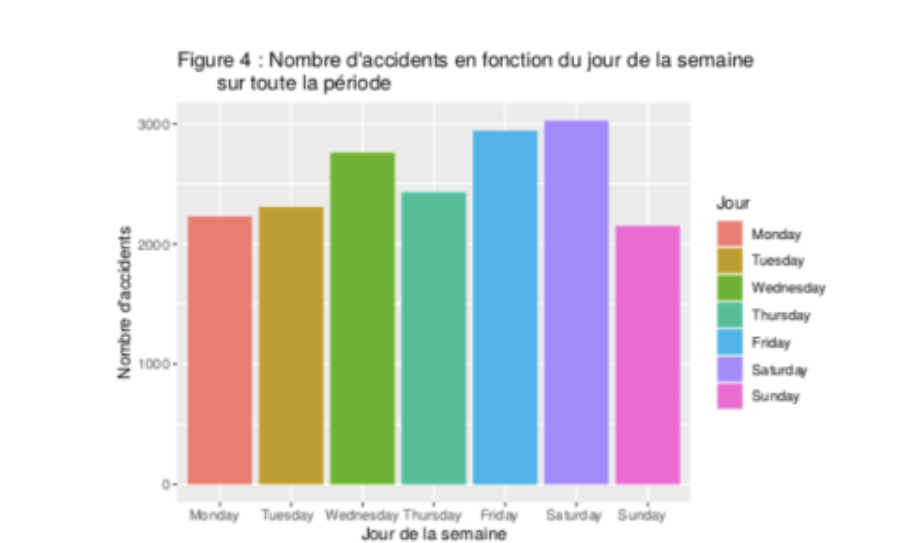

Exploitation d'une base de donnée
• Temps de travail accordé: 10h
• Nombre de membres dans le groupe: 2
Introduction
Dans le cadre de ce projet nous avons du analyser une
A partir d'une base de donnée, il a fallu faire un compte rendu concernant des accidents de voiture.
Comme support de travail nous avons eu 2 bases de données répertoriant les accidents sur la route dans toutes les régions de France entre 2006 et 2018 pour la première et une autre entre 2019 et 2021. Il a fallu les réunir puis trier les informations nécessaire à notre analyse, dans le cas de mon groupe: les mineurs engagés dans des accidents de la région Auvergne-Rhône-Alpes.
Une fois notre base de données prête à l'utilisation, nous avons pu rédiger un rapport sur ses accidents grâce à des graphiques produit sur RSturio en utilisant ggplot2.
Nous avons travailler à l'aide de ces graphiques pour analyser notre cas et faire une étude des accidents de notre groupe d'individus